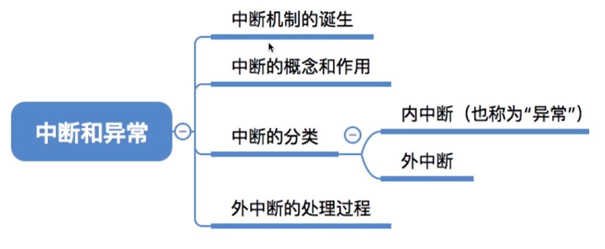

中断和异常 （五）
本文最后更新于：21 天前
知识总览

中断机制的诞生
早起的计算机，比如博文操作系统的发展讲解的，单道处理系统，一次只能处理一个程序。所以各个程序只能串行的执行，系统资源利用率比较低。
为了解决上述问题，人们发明了操作系统（作为计算机的管理者），引入中断机制，实现了多道程序并发执行。
本质：发生中断就意味着需要操作系统介入，开展管理工作。
举个例子，如果有多道程序运行，会有一个计时器，记录运行的时间。cpu收到计时部件发出的中断信号，切换为核心态为中断信号进行处理。操作系统内核会对中断信号进行处理，接受之后发现进程一的时间片时间到了，轮到进程二执行。进程二运行之后，发出系统调用（内中断信号），请求输出。cpu切换到内核态，对中断进行处理。进程二暂停等到打印机IO，换到进程三运行。等到打印机IO完成，设备向cpu发送外中断信号，cpu接收到io设备发来的中断信号，切换为核心态对中断进行处理。
中断的概念和应用
中断发生后，cpu会从用户态进入到内核态
中断发生后，当前运行的进程暂停运行，并由操作系统内核对中断进行处理
对于不同的中断信号，会进行不同的处理
发生了中断，就意味着操作系统介入，开展管理工作，由于操作系统的管理工作（比如进程切换、分配io设备等）需要使用特权指令，因此cpu要从用户态转换为内核态，中断可以使cpu从用户态切换为核心态，使操作系统或得计算机的控制权。有了中断，才能实现多道程序并发执行。
用户态到核心态的切换，只能通过中断实现的，并且是唯一的方式。
核心态到用户态的转换，通过程序状态字psw标志位标识的。
中断的分类
外中断处理过程
执行完每一个指令的时候，cpu都要检查当前是否有外部中断信号。
如果检测到了外部中断信号，则需要保护被中断进程的cpu环境（程序状态字psw，程序计数器pc，各种寄存器状态）
根据中断信号类型转入相应的中断处理程序
恢复原进程的cpu环境并退出中断，返回原进程继续往下执行
个人总结
内核态与用户态是操作系统的两种运行级别,跟intel cpu没有必然的联系, intel cpu提供Ring0-Ring3三种级别的运行模式，Ring0级别最高，Ring3最低。Linux使用了Ring3级别运行用户态，Ring0作为 内核态，没有使用Ring1和Ring2。Ring3状态不能访问Ring0的地址空间，包括代码和数据。Linux进程的4GB地址空间，3G-4G部 分大家是共享的，是内核态的地址空间，这里存放在整个内核的代码和所有的内核模块，以及内核所维护的数据。用户运行一个程序，该程序所创建的进程开始是运 行在用户态的，如果要执行文件操作，网络数据发送等操作，必须通过write，send等系统调用，这些系统调用会调用内核中的代码来完成操作，这时，必 须切换到Ring0，然后进入3GB-4GB中的内核地址空间去执行这些代码完成操作，完成后，切换回Ring3，回到用户态。这样，用户态的程序就不能 随意操作内核地址空间，具有一定的安全保护作用。
回顾
本博客所有文章除特别声明外，均采用 CC BY-SA 4.0 协议 ，转载请注明出处！